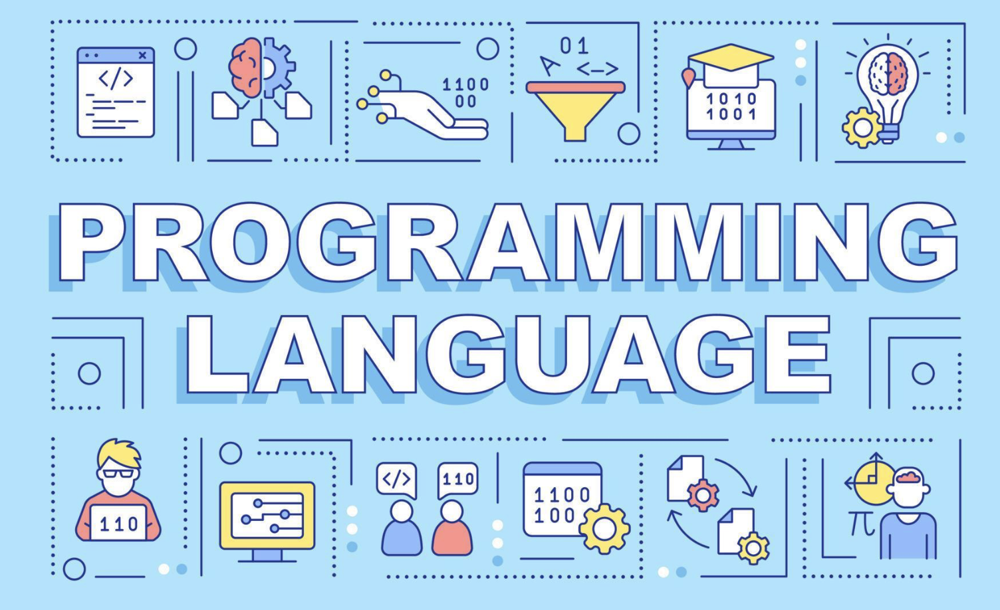

Overview

Programming languages are the foundation of modern computing. They allow developers to communicate instructions to computers in a structured and readable way. Different languages are designed for different purposes, such as web development, mobile apps, scientific computing, and enterprise software.
Some languages are known for being beginner-friendly, while others are designed for performance, portability, or large-scale application development. Choosing the right language often depends on the project goals, team needs, and the tools available.
This site focuses on three widely used programming languages: Python, JavaScript, and Java. Each one is important in computer science and has a unique role in the software industry.